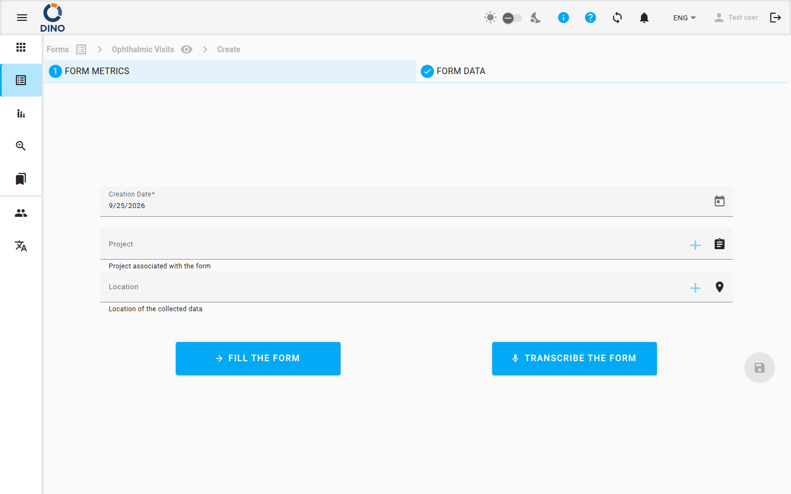

Form
La pagina Form è il tuo punto di partenza per la raccolta strutturata di dati in Dino. Da qui puoi sfogliare, creare e gestire i form schema, quindi visualizzare e utilizzare i dati raccolti tramite ciascun form.

La vista principale mostra una griglia di riquadri di form schema. Ogni riquadro mostra l'etichetta e l'icona del form. Passando il mouse su un riquadro vengono mostrati i pulsanti delle azioni:
- Modifica schema – Modifica la struttura del form (campi, validazione, metriche).
- Elimina schema – Rimuove il form schema (e tutti i suoi dati).
- Condividi URL – Ottieni un link pubblico per consentire l'invio di dati dall'esterno.
- Visualizza mappa – Apre la visualizzazione mappa per i dati con informazioni di posizione.
- Chatta con i tuoi dati – Usa la funzionalità DataChat per porre domande sui dati in linguaggio naturale.
Tip
Le azioni disponibili su un riquadro dipendono dai tuoi permessi. Potresti non vedere tutti i pulsanti.
Per creare un nuovo form schema, fai clic sul pulsante flottante + in basso a destra. Verrai indirizzato alla pagina Modifica form schema per progettare il tuo form.
Lavorare con i dati
Fai clic sul riquadro di un form schema per accedere alla sua lista di form. Questa tabella mostra tutte le voci di dati raccolte per quello schema.

La lista include una barra dei filtri che ti consente di cercare per parola chiave, intervallo di date, metriche, stato, utente e altro ancora. Puoi anche salvare dei filtri preimpostati per riutilizzarli rapidamente.
Esportazione
Usa il pulsante esporta per scaricare i dati in formato CSV o XLSX.

La finestra di esportazione ti consente di specificare alcuni parametri importanti per l'esportazione:
1) Quanti form esportare.
1) Form nella pagina. Esporta solo i form visualizzati nella pagina precedente, eventualmente filtrati e suddivisi in pagine.
2) Aggiungi filtri o Tutti gli elementi/1filtri. Se hai già applicato un filtro alla tua lista di form, è possibile esportare solo i form filtrati (seconda opzione). Se non hai ancora applicato alcun filtro, viene mostrata la prima opzione, che ti consente di aggiungere altri filtri.
3) Tutti i form. Tutti i form, senza filtro né paginazione.
2) Formato.
1) CSV. I dati verranno esportati in un file CSV. Ogni form estratto sarà una riga di un file in cui i campi saranno le colonne.
2) XLSX. Esportazione in formato Excel.
3) Splitted XLSX. Esportazione in formato Excel in cui ogni slide è un foglio diverso.
3) Opzioni dei campi
1) Seleziona tutti i campi del form. Consente di esportare tutti i campi del form.
2) Valori delle etichette. Per i campi che hanno valori preimpostati (campi a selezione singola o multipla), il valore esportato è il valore visualizzato, non il codice interno utilizzato per rappresentare quel valore.
3) Formato Data Analysis. I form che contengono slide ripetute e scelte multiple vengono esportati su più righe; ogni riga contiene solo una slide ripetuta e solo una scelta multipla, mentre gli altri campi rimangono invariati. Viene aggiunta una colonna extra, chiamata conta. Questa colonna assume il valore 1 solo nella prima riga del gruppo di ripetizione e 0 nelle altre.
4) Colonne separate. Le scelte multiple vengono esportate come colonne multiple
4) Selezione slide. Consente di visualizzare l'elenco dei campi di ogni slide, se desideri esportare solo alcuni campi e non tutti.
5) Selezione dei campi. Puoi selezionare/deselezionare singoli campi.
Alcune colonne del file esportato non possono essere deselezionate. Sono:
- Form ID
- Data di creazione
- Data di aggiornamento
- Dati utente DINO (nome e ID)
- Dati delle metriche (id, nome, ecc...)
- Dinoinvalid
Azioni sulle righe
Fai clic su una riga per espandere i suoi dettagli, oppure usa le azioni della riga (visualizza, modifica, elimina, stampa come PDF, scarica come DOCX, stampa badge). Le azioni disponibili dipendono dai tuoi permessi e dalla configurazione del form.
Creare nuovi dati
Fai clic sul pulsante flottante + nella pagina della lista per aprire un form vuoto per l'inserimento dei dati.

Compila i campi e invia. I nuovi dati appariranno nella lista.
Operazioni in blocco
Seleziona più dati usando le caselle di controllo per eseguire eliminazione o modifica in blocco (cambia lo stesso valore di campo in tutte le voci selezionate).
Visualizzazioni aggiuntive
- Mappa – Visualizza i dati con coordinate geografiche su una mappa interattiva. Scopri di più in Mappa dei form.
- DataChat – Interroga i dati del tuo form usando il linguaggio naturale. Vedi DataChat per i dettagli.
Warning
La funzionalità DataChat può consumare crediti. Controlla il saldo crediti del tuo account prima di utilizzarla.